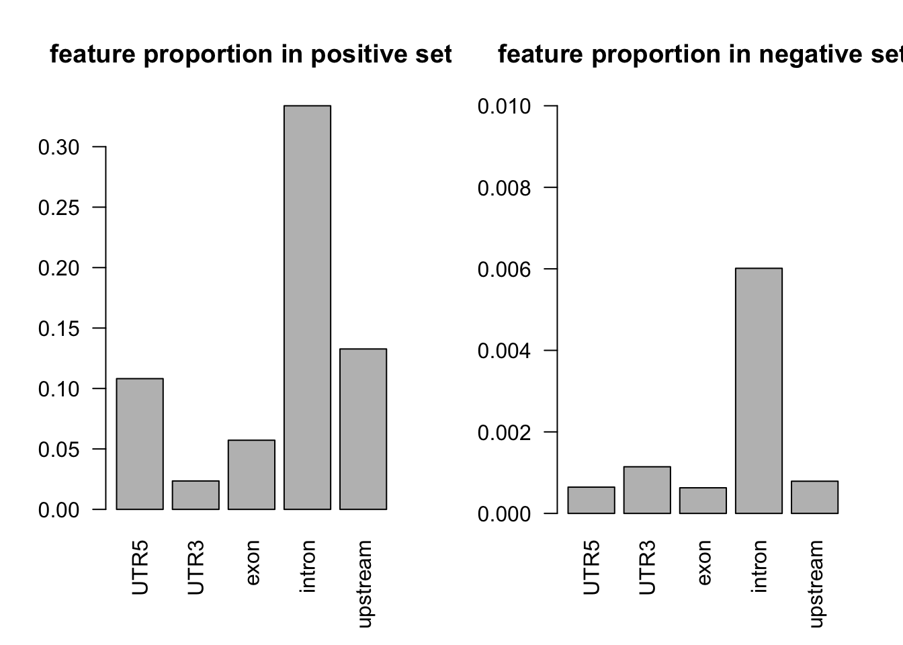

Last updated: 2020-07-21
Checks: 6 1
Knit directory: gene_level_fine_mapping/
This reproducible R Markdown analysis was created with workflowr (version 1.6.1). The Checks tab describes the reproducibility checks that were applied when the results were created. The Past versions tab lists the development history.
Great! Since the R Markdown file has been committed to the Git repository, you know the exact version of the code that produced these results.
Great job! The global environment was empty. Objects defined in the global environment can affect the analysis in your R Markdown file in unknown ways. For reproduciblity it’s best to always run the code in an empty environment.
The command set.seed(20200622) was run prior to running the code in the R Markdown file. Setting a seed ensures that any results that rely on randomness, e.g. subsampling or permutations, are reproducible.
Great job! Recording the operating system, R version, and package versions is critical for reproducibility.
Nice! There were no cached chunks for this analysis, so you can be confident that you successfully produced the results during this run.
Using absolute paths to the files within your workflowr project makes it difficult for you and others to run your code on a different machine. Change the absolute path(s) below to the suggested relative path(s) to make your code more reproducible.
| absolute | relative |
|---|---|
| /Users/nicholeyang/Desktop/gene_level_fine_mapping/data/training.RData | data/training.RData |
Great! You are using Git for version control. Tracking code development and connecting the code version to the results is critical for reproducibility.
The results in this page were generated with repository version 98a26e9. See the Past versions tab to see a history of the changes made to the R Markdown and HTML files.
Note that you need to be careful to ensure that all relevant files for the analysis have been committed to Git prior to generating the results (you can use wflow_publish or wflow_git_commit). workflowr only checks the R Markdown file, but you know if there are other scripts or data files that it depends on. Below is the status of the Git repository when the results were generated:
Ignored files:
Ignored: .DS_Store
Ignored: .Rproj.user/
Note that any generated files, e.g. HTML, png, CSS, etc., are not included in this status report because it is ok for generated content to have uncommitted changes.
These are the previous versions of the repository in which changes were made to the R Markdown (analysis/model_fitting.Rmd) and HTML (docs/model_fitting.html) files. If you’ve configured a remote Git repository (see ?wflow_git_remote), click on the hyperlinks in the table below to view the files as they were in that past version.
| File | Version | Author | Date | Message |
|---|---|---|---|---|
| Rmd | 98a26e9 | yunqiyang0215 | 2020-07-21 | wflow_publish(“analysis/model_fitting.Rmd”) |
load("/Users/nicholeyang/Desktop/gene_level_fine_mapping/data/training.RData")## remove NAs
dat = rbind(train_pos_all, train_neg_all)
NAs = apply(dat, 1, function(x) sum(is.na(x)))
dat = dat[NAs == 0, ]head(dat) gene_name variant_id UTR5 UTR3 exon intron upstream
1 LRRC39 chr1_100178174_A_G_b38 1 0 0 0 0
2 EXTL2 chr1_100895622_C_T_b38 0 0 0 0 1
3 KIF1B chr1_10211630_C_G_b38 1 0 0 0 0
6 SLC25A24 chr1_108199501_C_G_b38 0 0 0 1 0
8 TAF13 chr1_109076695_G_A_b38 0 0 0 0 1
9 C1orf194 chr1_109113015_C_A_b38 0 0 0 1 0
tss_dist_to_snp y
1 41 1
2 376 1
3 14 1
6 857 1
8 693 1
9 268 1par(mfrow = c(1,2))
# proportion of features in the positive set
tot_count = apply(dat[dat$y==1, c(3:7)], 2, function(x) sum(x == 1))
barplot(tot_count/dim(dat[dat$y==1, ])[1], las = 2, main = 'feature proportion in positive set')
# proportion of features in the negative set
tot_count = apply(dat[dat$y==0, c(3:7)], 2, function(x) sum(x == 1))
barplot(tot_count/dim(dat[dat$y==0, ])[1], ylim = c(0, 0.01), las = 2, main = 'feature proportion in negative set')
fit1 = glm(y ~ UTR5, data = dat, family = "binomial")
fit2 = glm(y ~ UTR3, data = dat, family = "binomial")
fit3 = glm(y ~ exon, data = dat, family = "binomial")
fit4 = glm(y ~ intron, data = dat, family = "binomial")
fit5 = glm(y ~ upstream, data = dat, family = "binomial")
summary(fit1)
Call:
glm(formula = y ~ UTR5, family = "binomial", data = dat)
Deviance Residuals:
Min 1Q Median 3Q Max
-2.2042 -0.3275 -0.3275 -0.3275 2.4301
Coefficients:
Estimate Std. Error z value Pr(>|z|)
(Intercept) -2.89909 0.01758 -164.92 <2e-16 ***
UTR5 5.23607 0.16651 31.45 <2e-16 ***
---
Signif. codes: 0 '***' 0.001 '**' 0.01 '*' 0.05 '.' 0.1 ' ' 1
(Dispersion parameter for binomial family taken to be 1)
Null deviance: 29212 on 65857 degrees of freedom
Residual deviance: 27078 on 65856 degrees of freedom
AIC: 27082
Number of Fisher Scoring iterations: 5summary(fit2)
Call:
glm(formula = y ~ UTR3, family = "binomial", data = dat)
Deviance Residuals:
Min 1Q Median 3Q Max
-1.2796 -0.3423 -0.3423 -0.3423 2.3944
Coefficients:
Estimate Std. Error z value Pr(>|z|)
(Intercept) -2.80792 0.01684 -166.72 <2e-16 ***
UTR3 3.04505 0.15962 19.08 <2e-16 ***
---
Signif. codes: 0 '***' 0.001 '**' 0.01 '*' 0.05 '.' 0.1 ' ' 1
(Dispersion parameter for binomial family taken to be 1)
Null deviance: 29212 on 65857 degrees of freedom
Residual deviance: 28910 on 65856 degrees of freedom
AIC: 28914
Number of Fisher Scoring iterations: 5summary(fit3)
Call:
glm(formula = y ~ exon, family = "binomial", data = dat)
Deviance Residuals:
Min 1Q Median 3Q Max
-1.9439 -0.3364 -0.3364 -0.3364 2.4084
Coefficients:
Estimate Std. Error z value Pr(>|z|)
(Intercept) -2.84356 0.01712 -166.06 <2e-16 ***
exon 4.56907 0.17464 26.16 <2e-16 ***
---
Signif. codes: 0 '***' 0.001 '**' 0.01 '*' 0.05 '.' 0.1 ' ' 1
(Dispersion parameter for binomial family taken to be 1)
Null deviance: 29212 on 65857 degrees of freedom
Residual deviance: 28168 on 65856 degrees of freedom
AIC: 28172
Number of Fisher Scoring iterations: 5summary(fit4)
Call:
glm(formula = y ~ intron, family = "binomial", data = dat)
Deviance Residuals:
Min 1Q Median 3Q Max
-1.7248 -0.2847 -0.2847 -0.2847 2.5401
Coefficients:
Estimate Std. Error z value Pr(>|z|)
(Intercept) -3.18549 0.02021 -157.63 <2e-16 ***
intron 4.41697 0.06222 70.98 <2e-16 ***
---
Signif. codes: 0 '***' 0.001 '**' 0.01 '*' 0.05 '.' 0.1 ' ' 1
(Dispersion parameter for binomial family taken to be 1)
Null deviance: 29212 on 65857 degrees of freedom
Residual deviance: 23214 on 65856 degrees of freedom
AIC: 23218
Number of Fisher Scoring iterations: 6summary(fit5)
Call:
glm(formula = y ~ upstream, family = "binomial", data = dat)
Deviance Residuals:
Min 1Q Median 3Q Max
-2.2049 -0.3231 -0.3231 -0.3231 2.4409
Coefficients:
Estimate Std. Error z value Pr(>|z|)
(Intercept) -2.92686 0.01781 -164.31 <2e-16 ***
upstream 5.26552 0.15065 34.95 <2e-16 ***
---
Signif. codes: 0 '***' 0.001 '**' 0.01 '*' 0.05 '.' 0.1 ' ' 1
(Dispersion parameter for binomial family taken to be 1)
Null deviance: 29212 on 65857 degrees of freedom
Residual deviance: 26581 on 65856 degrees of freedom
AIC: 26585
Number of Fisher Scoring iterations: 5fit6 = glm(y ~ UTR5 + intron + upstream + exon, data = dat, family = "binomial")
summary(fit6)
Call:
glm(formula = y ~ UTR5 + intron + upstream + exon, family = "binomial",
data = dat)
Deviance Residuals:
Min 1Q Median 3Q Max
-2.2049 -0.2128 -0.2128 -0.2128 2.7565
Coefficients:
Estimate Std. Error z value Pr(>|z|)
(Intercept) -3.77663 0.02694 -140.17 <2e-16 ***
UTR5 6.11361 0.16775 36.44 <2e-16 ***
intron 5.00810 0.06473 77.38 <2e-16 ***
upstream 6.11529 0.15200 40.23 <2e-16 ***
exon 5.50214 0.17588 31.28 <2e-16 ***
---
Signif. codes: 0 '***' 0.001 '**' 0.01 '*' 0.05 '.' 0.1 ' ' 1
(Dispersion parameter for binomial family taken to be 1)
Null deviance: 29212 on 65857 degrees of freedom
Residual deviance: 16078 on 65853 degrees of freedom
AIC: 16088
Number of Fisher Scoring iterations: 6fit7 = glm(y ~ UTR5 + UTR3 + intron + upstream + exon, data = dat, family = "binomial")
summary(fit7)
Call:
glm(formula = y ~ UTR5 + UTR3 + intron + upstream + exon, family = "binomial",
data = dat)
Deviance Residuals:
Min 1Q Median 3Q Max
-2.2049 -0.2061 -0.2061 -0.2061 2.7795
Coefficients:
Estimate Std. Error z value Pr(>|z|)
(Intercept) -3.84148 0.02783 -138.05 <2e-16 ***
UTR5 6.17847 0.16790 36.80 <2e-16 ***
UTR3 4.07861 0.16115 25.31 <2e-16 ***
intron 5.07295 0.06510 77.93 <2e-16 ***
upstream 6.18014 0.15215 40.62 <2e-16 ***
exon 5.56699 0.17602 31.63 <2e-16 ***
---
Signif. codes: 0 '***' 0.001 '**' 0.01 '*' 0.05 '.' 0.1 ' ' 1
(Dispersion parameter for binomial family taken to be 1)
Null deviance: 29212 on 65857 degrees of freedom
Residual deviance: 15607 on 65852 degrees of freedom
AIC: 15619
Number of Fisher Scoring iterations: 6\[AIC=-2\log L(\theta)+2k\] \[deviance=-2\log L(\theta)\]
set.seed(1)
n = dim(dat)[1]
indx = sample(1:n, round(2*n/3), replace = FALSE)
train = dat[indx, ]
test = dat[-indx, ]# build model on the training set
fit.all = glm(y ~ UTR5 + UTR3 + intron + upstream + exon, data = train, family = "binomial")
# evaluate on the test set
pred.probs=predict(fit.all,test,type="response")plot(pred.probs, type = 'p', pch = '.')glm.pred = rep(0, length(pred.probs))
glm.pred[pred.probs>0.5]= 1
table(glm.pred, test$y)
glm.pred 0 1
0 20496 446
1 184 827#install.packages("PRROC")
require(PRROC)Loading required package: PRROCfg <- pred.probs[test$y == 1]
bg <- pred.probs[test$y== 0]
# ROC Curve
roc <- roc.curve(scores.class0 = fg, scores.class1 = bg, curve = T)
plot(roc)# PR Curve
pr <- pr.curve(scores.class0 = fg, scores.class1 = bg, curve = T)
plot(pr)
sessionInfo()R version 3.6.3 (2020-02-29)
Platform: x86_64-apple-darwin15.6.0 (64-bit)
Running under: macOS Catalina 10.15.5
Matrix products: default
BLAS: /Library/Frameworks/R.framework/Versions/3.6/Resources/lib/libRblas.0.dylib
LAPACK: /Library/Frameworks/R.framework/Versions/3.6/Resources/lib/libRlapack.dylib
locale:
[1] en_US.UTF-8/en_US.UTF-8/en_US.UTF-8/C/en_US.UTF-8/en_US.UTF-8
attached base packages:
[1] stats graphics grDevices utils datasets methods base
other attached packages:
[1] PRROC_1.3.1 workflowr_1.6.1
loaded via a namespace (and not attached):
[1] Rcpp_1.0.4 rprojroot_1.3-2 digest_0.6.25 later_1.0.0
[5] R6_2.4.1 backports_1.1.5 git2r_0.26.1 magrittr_1.5
[9] evaluate_0.14 highr_0.8 stringi_1.4.6 rlang_0.4.5
[13] fs_1.3.2 promises_1.1.0 whisker_0.4 rmarkdown_2.1
[17] tools_3.6.3 stringr_1.4.0 glue_1.3.2 httpuv_1.5.2
[21] xfun_0.12 yaml_2.2.1 compiler_3.6.3 htmltools_0.4.0
[25] knitr_1.28